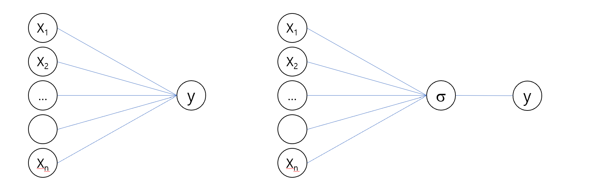
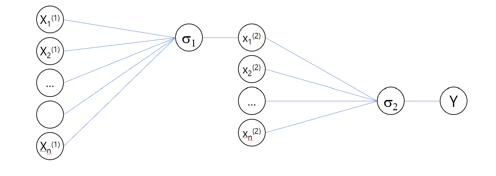
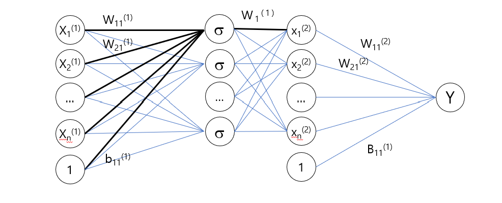
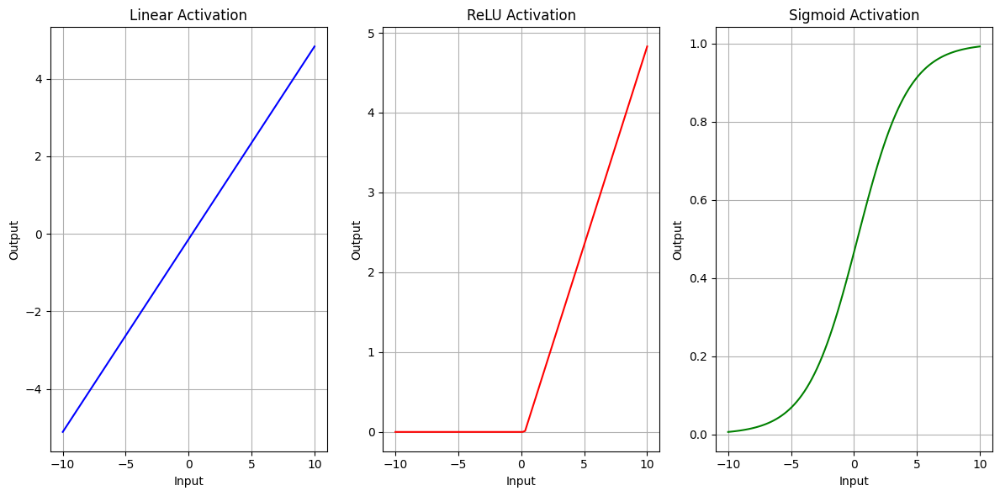
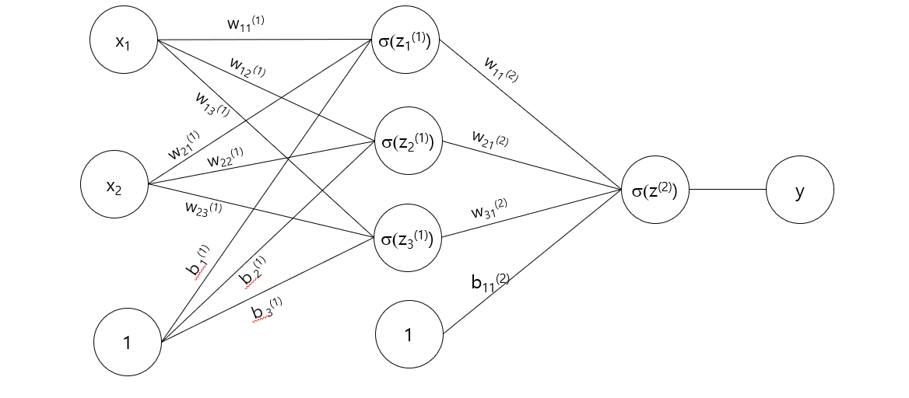
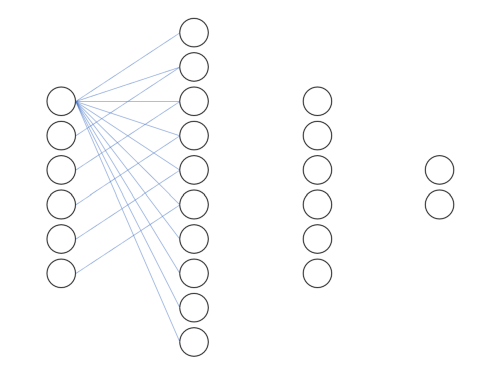

Multiple Regression is a type of supervised learning where the model assumes a linear relationship between the input features \(X\) and the target \(y\): \[
y = \beta_0 + \beta_1 x_1 + \beta_2 x_2 + \ldots + \beta_p x_p + \epsilon
\]
Where:
\(X = [x_1, x_2, \ldots, x_p]\) are the input features (gene \(x_i\) expresion value, \(y\) is target gene expression value)
\(\beta_0, \beta_1, \ldots, \beta_p\) are the model coefficients (parameters).
\(\epsilon\) is the error term.
3.0.2 Neural networks
A neural network with no hidden layers and a single output node is essentially a multiple regression model \[
y = \sigma(W \cdot X + b)
\]
Where:
\(W\): Weight vector (equivalent to () in regression).
\(b\): Bias term (equivalent to (_0) in regression).
\(\sigma\): activation function
Multiple regression can be seen as a very simple neural network

3.0.3 Key Differences
Linear vs. non-linear: Neural Networks with hidden layers and non-linear activation functions (e.g., ReLU, sigmoid), they can model highly complex, non-linear relationships.
Interactions: Multiple Regression requires manual engineering of interaction terms (e.g., \(x_1 \times x_2\). But Neural Networks automatically learn interactions between features through layers of non-linear transformations.
Scale: linear regression is available with low-dimensional features while NN handle high-dimensional inputs, such as images or text.
3.0.4 Neural Networks Extension
By introducing hidden layers and non-linear activation functions, neural networks extend regression to capture non-linear relationships: \[
y = \sigma(W_2 \cdot \sigma(W_1 \cdot X + b_1) + b_2)
\] where: - \(W_1\) and \(W_2\): Weight matrices for hidden and output layers. - \(b_1\) and \(b_2\): Bias terms. - \(\sigma\): Non-linear activation function (e.g., ReLU, sigmoid).
Deeper networks with multiple layers allow for hierarchical feature learning, capturing increasingly abstract patterns in data.

3.0.5 Architecture
Neurons (Nodes): Basic units of a neural network that take inputs, perform a computation, and pass outputs
Layers:
Input Layer: The starting point where data is fed into the network
Hidden Layers: Intermediate layers between the input and output
Output Layer: The final layer that produces the result (classification, regression)
3.0.6 Weights and Biases:
Weights: Parameters that determine the strength. Adjusted during training
Biases: Additional parameters added to the input. It allows more flexibility

3.0.7 Activation Functions
Activation functions introduce non-linearity to the model, enabling it to learn complex patterns.
Common activation functions include:
ReLU (Rectified Linear Unit): $ f(x) = (0, x) $
Sigmoid: $ f(x) = $
Tanh: $ f(x) = $
import numpy as npimport matplotlib.pyplot as plt# Generate synthetic datanp.random.seed(42)X = np.linspace(-10, 10, 100).reshape(-1, 1) # Input: 100 points from -10 to 10weights = np.random.randn(1, 1) # Random weightsbias = np.random.randn(1) # Random bias# Linear transformationlinear_output = X @ weights + bias# Activation functionsdef identity(x):return x # Linear (no activation)def relu(x):return np.maximum(0, x) # ReLUdef sigmoid(x):return1/ (1+ np.exp(-x)) # Sigmoid# Apply activation functionsoutput_identity = identity(linear_output)output_relu = relu(linear_output)output_sigmoid = sigmoid(linear_output)# Plot resultsplt.figure(figsize=(12, 6))# Plot the input-output relationship for each activation functionplt.subplot(1, 3, 1)plt.plot(X, output_identity, label="Linear Activation (Identity)", color="blue")plt.title("Linear Activation")plt.xlabel("Input")plt.ylabel("Output")plt.grid(True)plt.subplot(1, 3, 2)plt.plot(X, output_relu, label="ReLU Activation", color="red")plt.title("ReLU Activation")plt.xlabel("Input")plt.ylabel("Output")plt.grid(True)plt.subplot(1, 3, 3)plt.plot(X, output_sigmoid, label="Sigmoid Activation", color="green")plt.title("Sigmoid Activation")plt.xlabel("Input")plt.ylabel("Output")plt.grid(True)plt.tight_layout()plt.show()

3.0.8 Forward Pass
The process of passing input data through the network, layer by layer, to produce an output.
Each neuron computes a weighted sum of its inputs, adds a bias, and passes the result through an activation function.
This involves applying a linear transformation.
3.0.8.1 (Example) of Forward Pass and Loss Function
Let’s consider a simple neural network with: - 1 Input Layer: 2 input nodes. - 1 Hidden Layer: 3 nodes with ReLU (Rectified Linear Unit) activation. - 1 Output Layer: 1 node with sigmoid activation.

The forward pass computes: 1. Input to Hidden Layer: \[
Z^{(1)} = X W^{(1)} + b^{(1)} \\
\]
A measure of how well the neural network’s predictions match the actual data. Common loss functions include Mean Squared Error (MSE) for regression and Cross-Entropy Loss for classification.
\[
\frac{1}{n}\sum(y_i-\hat{y}_i)^2
\]
np.mean((y - y_hat)**2)
0.22009897381259744
Backpropagation and Training:
Backpropagation: The process by which the network learns by adjusting weights and biases based on the loss. It uses gradients computed by the chain rule to update these parameters through gradient descent or other optimization algorithms.
Optimization Algorithm: Techniques like Stochastic Gradient Descent (SGD) or Adam adjust the model parameters to minimize the loss.
3.1 PyTorch
PyTorch is an open-source deep learning framework developed by Facebook’s AI Research lab (FAIR). It is widely used in research and industry due to its dynamic computation graph and ease of use.
PyTorch Ecosystem Overview:
torch: The core library for tensor operations and automatic differentiation.
torch.nn: A sub-library used to build and train neural network models.
torch.optim: Tools for optimization algorithms (e.g., SGD, Adam).
torchvision: Provides datasets, pre-trained models, and image transformations.
Tensors
Tensors are the primary data structures in PyTorch, analogous to NumPy arrays but with added capabilities such as the ability to run on GPUs for faster computation.
import matplotlib.pyplot as pltimport matplotlib.image as mpimgimg = mpimg.imread('images/nn.png')plt.imshow(img)plt.axis('off')plt.show()

3.1.1 How a Neural Network Works:
Imagine a simple neural network with one input layer, one hidden layer, and one output layer. Here’s how it functions: 1. Input data is passed to the input layer. 2. The input is transformed and propagated through the hidden layer(s), where each neuron applies weights, biases, and an activation function. 3. The result reaches the output layer, which produces the final prediction. 4. The loss function calculates the error between the predicted output and the true value. 5. Backpropagation is used to adjust the weights and biases to reduce the loss in future iterations.
3.1.2 Simple Example:
A neural network to classify handwritten digits (like in the MNIST dataset) might: - Input Layer: Accept an image of a digit (28x28 pixels). - Hidden Layers: Extract features and learn patterns in the image. - Output Layer: Produce probabilities for each digit (0-9), indicating the most likely classification.
3.1.3 Applications of Neural Networks:
Image recognition (e.g., identifying objects in pictures)
Speech recognition (e.g., voice-to-text)
Natural language processing (e.g., language translation)
Medical diagnosis (e.g., detecting diseases from scans)
Neural networks have evolved into more complex structures such as Convolutional Neural Networks (CNNs) for image tasks and Recurrent Neural Networks (RNNs) for sequential data, enhancing their ability to solve specialized problems.